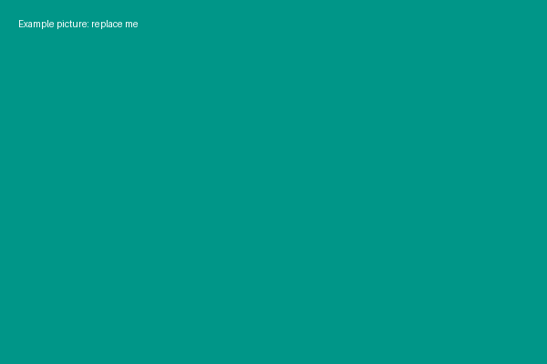
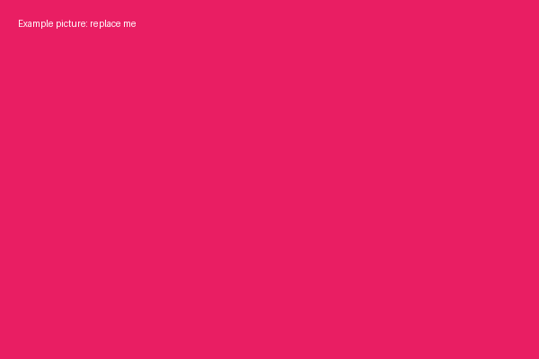
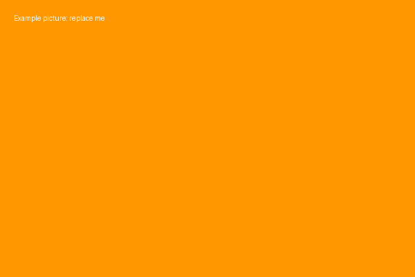

About My Hobby

This is an example paragraph. Replace it with a few sentences about your hobby.
My Favourite Things
- Example favourite one
- Example favourite two
- Example favourite three


Find Out More
Read more about me on my second page.
Visit an example website to learn more.